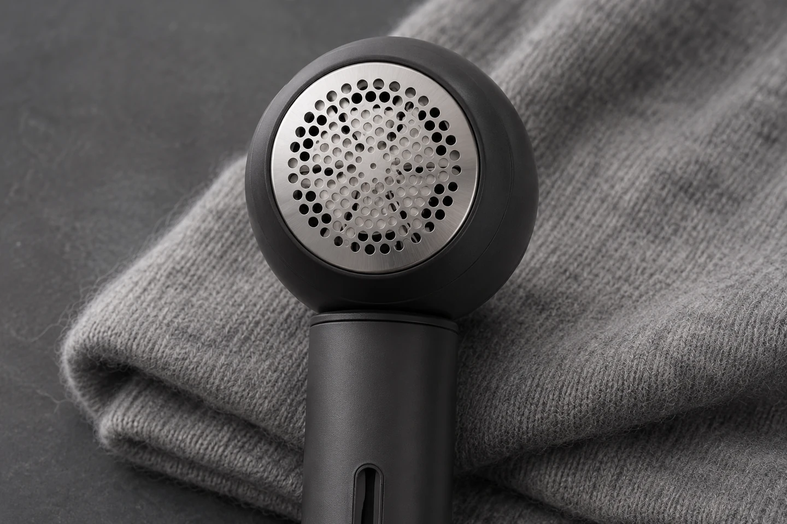
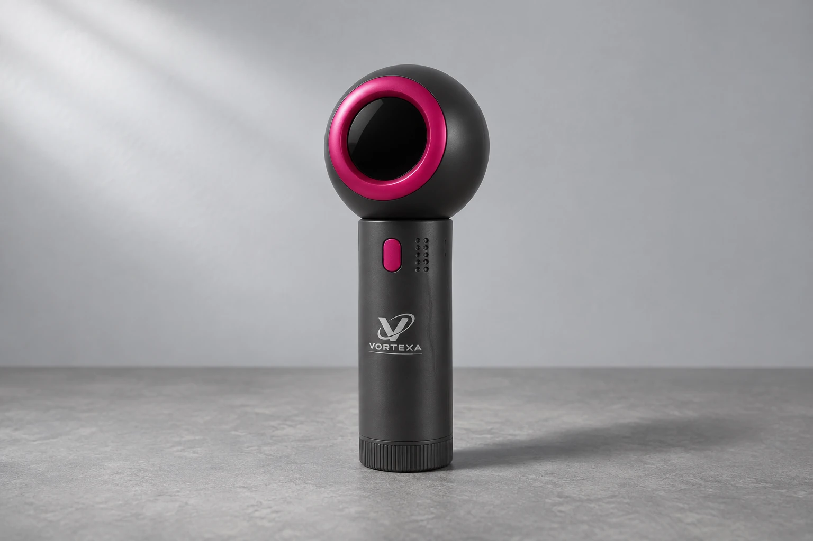

Машинка от катышков AR-008
Уход за трикотажем
Сетка касается ткани, а шесть лезвий за ней срезают выступающие катышки.
- Под сеткой
- 6 лезвий
- Настройка
- 3 режима
- Работа от аккумулятора
- до 90 мин
Как убрать катышки с трикотажа

Сторона, которая касается ткани
К одежде прикладывают серебристую сетку. Цветное кольцо находится с другой стороны.
Какие следы носки можно убрать
Манжеты и боковые швы
На ровном участке у манжеты проще увидеть, какие катышки ещё остались. Расправьте складки и ведите серебристую сетку по поверхности, оставляя сам шов и пуговицы в стороне.
Трикотаж разной вязки
Плотный джемпер и рыхлая вязка по-разному ложатся под головку. У машинки три режима. Начните с небольшого малозаметного участка и посмотрите, как реагирует именно ваша вещь.
Несколько вещей за один раз
Встроенное всасывание собирает срезанный ворс внутри. Между вещами можно проверить отсек и освободить его. Заряжается прибор через USB, поэтому на время обработки удобно отойти от розетки к хорошо освещённому столу.
Путь ворса
Сетка
Перфорированная сетка отделяет полотно от движущихся лезвий.
Лезвия
Лезвия срезают катышки, попавшие в отверстия на рабочей поверхности.
Сбор ворса
Система всасывания собирает срезанный ворс внутри машинки.
Три режима для работы с тканью
Настройку выбирают на корпусе рядом с цифровым дисплеем.

Характеристики
Все параметры 6
- Лезвия
- 6
- Режимы
- 3
- Время работы
- До 90 мин
- Зарядка
- USB
- Дисплей
- Цифровой
- Головка
- С защитной сеткой
Чем машинка отличается от липкого ролика?
Ролик подбирает прилипшие волоски и сор. Катышек держится за нити самого полотна. Его выступающая часть попадает в отверстие сетки, и лезвия под ней срезают ворс.
Какой стороной прикладывать головку?
Рабочая сторона — круглая серебристая сетка. Прикладывайте её плоскостью к расправленной ткани. Розовое кольцо на головке при этом обращено к вам.
Можно ли пройти поверх вытянутой петли?
Обойдите петлю. Через отверстие сетки она может попасть к лезвиям. Такой участок лучше сначала привести в порядок способом, подходящим для конкретной вязки.
На сколько хватает заряда?
Заявленное время работы — до 90 минут. Это ориентир по времени. Сколько вещей удастся обработать, зависит от количества катышков и площади каждого участка.

Машинка от катышков
AR-008
[8 990 ₸]
- [В наличии]
- Доставка [1–7 дней]
- Гарантия [12 месяцев]
Задать вопрос продавцу
Скопируйте текст и отправьте его продавцу. Название и модель уже указаны.